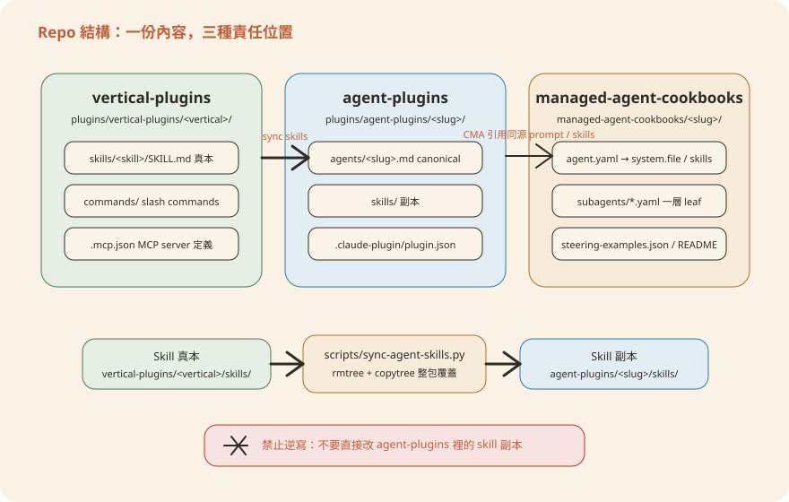
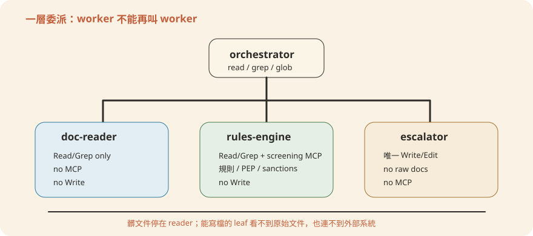

Chapter 2核心概念與 CMA 架構
第 1 章看的是大圖：一份系統提示、兩種交付。這一章往下拆一層，回答四個問題：一支
agent 到底由哪四塊組成？repo
的三個資料夾怎麼分工？CMA 的設定檔 agent.yaml
每一欄在做什麼？以及——為什麼「能寫檔的人」被刻意限制到只剩一個？讀完之後，你應該能對著任何一支 agent 的設定檔，說出每一欄在正式
API 呼叫裡會變成什麼。程式碼看不懂沒關係，主線的比喻與圖解就足夠你掌握整個架構。
- agent 的四塊積木（第 0 章第 3 節）——本章第 1 節會把這四塊拆得更細。
- 10 支 agent 的全貌（第 1 章）——知道 kyc-screener、gl-reconciler 這些名字各自負責什麼。
1. Agent 的四個組成
先講結論：一支 agent 就像銀行裡的一位新進員工，四份文件決定他能做什麼。系統提示是他的職務說明書，Skill 是部門 SOP，工具（Tools）是他桌上軟體的使用權限，MCP 則是他能登入的核心系統帳號。
精確地說：不論包成 Plugin（外掛）還是 CMA（Claude Managed Agents，Claude 託管代理），一支具名代理（Named Agent）都由同樣四塊拼起來。系統提示決定「怎麼想」。Skill 決定「特定的事怎麼做」。工具決定「能動什麼」。MCP（Model Context Protocol，模型情境協定）決定「能讀寫哪些外部資料」。
系統提示（System Prompt）
agent 的職務說明書：角色、工作流程、紀律與子代理規則。唯一來源在
plugins/agent-plugins/<slug>/agents/<slug>.md。Plugin 直接讀這份檔案；CMA 透過
agent.yaml 的 system.file 把同一份檔案內嵌進 API 載荷。一份原稿，兩種用法。
Skill
特定任務的知識包，像部門 SOP（例如「怎麼寫一份 xlsx 稽核報告」）。真本放在
plugins/vertical-plugins/<vertical>/skills/，同步後變成
plugins/agent-plugins/<slug>/skills/ 的副本。CMA 用 skills.from_plugin 整包上傳。
Tools
agent 能執行的動作，例如 Read（讀檔）、Grep／Glob（搜尋）、Write／Edit（寫檔改檔）。CMA 用 agent_toolset_20260401 這個
type，在 configs 裡逐一開關。預設全關（default_config: enabled: false），只開名單上的幾個——這是最小權限原則的第一道閘。
MCP
接外部資料源的標準插座——總帳、CRM、行情、制裁名單庫都從這裡接。agent 只認
MCP server 的「名字」。同一個名字，現在指向本機
mock（假資料伺服器，127.0.0.1:800x），上線時改指真實系統即可，agent 裡的名稱一個字都不用改。
一句話總結：一支 agent＝系統提示（怎麼想）＋Skill（怎麼做）＋Tools（能動什麼）＋MCP（能連什麼），Plugin 與 CMA 只是同一組零件的兩種包裝。
2. Repo 目錄結構解剖
先講結論：三個資料夾不是三份重複內容，而是「真本、封裝、部署食譜」的分工。就像銀行的規章制度只有總行版是正本，各分行牆上掛的是同步下來的副本——改規章只能改正本，再統一發布。
plugins/vertical-plugins/：各垂直領域（vertical）的 skill 真本（canonical source）、指令與.mcp.json。這裡是唯一可以動手改 skill 的地方。plugins/agent-plugins/：十支具名代理各自的 Plugin 封裝。裡面的系統提示是唯一來源；skills 資料夾則是從 vertical 同步過來的副本，不能手改。managed-agent-cookbooks/：同一支 agent 的 CMA 部署食譜（cookbook）。它靠相對路徑引用agent-plugins/裡的系統提示與 skills，自己不重複存一份內容。

這個分工帶來一條硬紀律，屬於必要步驟，不能省：Skill 一律改 vertical-plugins/ 的真本。改完跑
python3 scripts/sync-agent-skills.py 把副本整包重建，再跑 python3 scripts/check.py
驗證。三步缺一不可。直接手改 agent 包裡的 skills 副本沒有用——只要副本跟真本不一致（術語叫漂移，drift），check.py 就會把 commit 擋下來。
scripts/check.py 每次執行做三件事：
- Manifest 格式檢查：逐一檢查每份
plugin.json與agent.yaml的格式是否合法。 - 路徑解析檢查：確認
system.file、skills.path、callable_agents.manifest這些相對路徑全部真的解析得到檔案。cookbook 引用 agent-plugins 的鏈路只要斷一節，這裡就會報錯。 - 漂移比對：把
agent-plugins/<slug>/skills/的每份副本跟它的vertical-plugins/來源逐一比對，內容只要不一致，commit 就會被擋下來。這就是為什麼手改副本注定白工——下一次 check 一定抓到。
一句話總結：skill 只有 vertical-plugins 裡那份是正本，改完必跑 sync 再跑 check，其他地方看到的都是不可手改的副本。
3. agent.yaml 逐欄解說
先給比喻：agent.yaml 就像人資系統裡一張「新職位設定單」——這個職位叫什麼、配哪顆腦袋、職務說明書放哪、桌上開哪些軟體權限、能登入哪個系統、底下帶哪幾個助理。它是一份
YAML（一種給人讀也給程式讀的設定檔格式），也是 CMA 部署的核心輸入。以
kyc-screener（開戶審查，KYC）為例，下面是它完整的設定檔——非工程讀者可以跳過程式碼，直接看後面的白話對照：
# KYC Screener — managed-agent cookbook
name: kyc-screener
model: claude-opus-4-7
system:
file: ../../plugins/agent-plugins/kyc-screener/agents/kyc-screener.md
append: "You are running headless. Produce files in ./out/; do not assume an open Office document."
tools:
- type: agent_toolset_20260401
default_config: { enabled: false }
configs:
- { name: read, enabled: true }
- { name: grep, enabled: true }
- { name: glob, enabled: true }
- { type: mcp_toolset, mcp_server_name: screening, default_config: { enabled: true } }
mcp_servers:
- { type: url, name: screening, url: "${SCREENING_MCP_URL}" }
skills:
- { from_plugin: ../../plugins/agent-plugins/kyc-screener }
callable_agents:
- { manifest: ./subagents/doc-reader.yaml }
- { manifest: ./subagents/rules-engine.yaml }
- { manifest: ./subagents/escalator.yaml } # only leaf with Write每一欄的一句話版本：
name／model：這支 agent 叫什麼、用哪個 Claude 模型當腦袋。system：職務說明書放哪——指回 Plugin 那份唯一來源，再用append補一句 CMA 專屬提醒（因為 CMA 是 headless（無人值守）跑的，要提醒它把產出寫成檔案）。tools：桌上開哪些軟體權限——預設全關，只開白名單（allowlist）上的 read／grep／glob，沒有 write。mcp_servers：能登入哪個外部系統——網址先用環境變數佔位，部署時才代入真正的網址。skills：把整包部門 SOP 一次上傳。callable_agents：底下帶哪三個助理——下一節細講。
system.file/append：指回外掛那份唯一來源系統提示，不重寫一次；append是 CMA 專屬的補充句——因為無人值守，要提醒 agent「這裡沒有開著的 Office 文件，產出要落地成./out/底下的檔案」。這是系統提示「同源、加殼」的具體實作。tools的agent_toolset_20260401：default_config: { enabled: false }代表沒列出來的工具一律關閉，configs只白名單開read／grep／glob——主 orchestrator 本身沒有write，寫檔這件事完全交給葉子工人。另一條是mcp_toolset，把 MCP 包成一種工具類型掛上來。mcp_servers的${SCREENING_MCP_URL}：CMA 用環境變數佔位，部署腳本deploy-managed-agent.sh在POST /v1/agents前把它代換成真正網址；環境變數代換值只允許[A-Za-z0-9._/:@-]白名單字元，避免注入奇怪內容。名字screening不管指本機 mock 還是真實廠商都不變，改的只有這把環境變數的值。skills.from_plugin：不是列單一 skill 路徑，而是整個agent-plugins/kyc-screener目錄下的skills/*全部上傳，各自換成skill_id。callable_agents.manifest：靜態宣告三個葉子工人的 yaml 路徑，部署時逐一先建立子代理、拿到 id，再引用回主 agent——見下一節。
一句話總結：agent.yaml 就是一張職位設定單——叫什麼、怎麼想、能動什麼、能連什麼、帶哪些助理，六欄講完一支 agent 的全部設定。
4. callable_agents：一層委派的執行流
先講結論：callable_agents（可呼叫子代理）的委派只有一層——主管可以派工給助理，助理不能再往下轉包。精確地說：orchestrator（主代理）可以呼叫 leaf worker（葉子工人），但 worker 不能再呼叫其他子代理。這個功能目前是研究預覽（research preview）。
這條限制在 kyc-screener 身上具體長這樣。orchestrator 本身沒有 write
權限，只負責派工給三個葉子工人：doc-reader（讀未受信任的開戶文件）、rules-engine（套 KYC／AML 規則，跑制裁與政治公眾人物 PEP 篩查）、escalator（唯一有 Write 的工人，寫出
./out/escalation-<packet>.xlsx 給合規官簽核）。三支子代理各自的 agent.yaml 都在
managed-agent-cookbooks/kyc-screener/subagents/ 底下。權限彼此隔離：doc-reader 只有
read／grep，沒有任何 MCP；rules-engine 多了 screening MCP
但仍然唯讀；只有 escalator 開了 write／edit，卻完全不碰原始文件、也沒有任何 MCP 連線。

整趟執行流從一則 steering event（指令事件，等於丟給 agent 的一張工單）開始。doc-reader 回傳的是通過 schema（格式規格）驗證的 JSON（結構化資料格式），不夾帶自由文字——按「▶ 播放流程」逐步看：
Screen onboarding packet <id>，本身只有 read/grep/glob，無 write讀未受信任的護照／公司設立文件／實質受益人（UBO）圖，回傳 schema 驗證過的 JSON，不含自由文字
拿驗證過的 entity 檔跑內部規則，並呼叫
screening MCP 做制裁／PEP／負面新聞篩查，回傳每條規則 pass/fail 與命中信心值
彙總規則結果與篩查命中，寫出
./out/escalation-<packet>.xlsx，交合規官簽核；agent 本身只建議風險評等，不做最終決定
這個模式對銀行的意義很直接：一支「開戶審查」agent 內部其實有分工。碰未受信任文件的 worker 完全沒有寫檔權；能寫檔的 worker 完全不碰原始文件，也連不到任何外部系統。就算
doc-reader 讀到一份被塞了惡意指令的偽造護照掃描檔（這種攻擊叫提示注入，prompt injection），它能造成的最大傷害也只是回傳一份格式不對的 JSON——它沒有 write、沒有
MCP，傷不到帳本，也連不到黑名單庫。這種「用架構切分風險」的做法，正是下一節的設計哲學核心。
一句話總結：委派只有一層，而且權限刻意錯開——碰髒資料的不能寫、能寫的碰不到髒資料，就算文件被下毒也傷不到帳本。
5. 安全分層與把關哲學
先講結論：十支 named agent 依風險分成三級（安全分層，security tier），判斷標準很樸素——越靠近「錢」跟「法規」，風險越高，寫檔權就收得越緊：
- 🟢 低 前台／研究類，例如會前準備、市場研究——產出是內部草稿，主代理可以自己直接存檔。
- 🟡 中 財報追蹤、估值建模、投行提案——仍是研究或提案性質，但牽涉的判斷更重。
- 🔴 高 開戶審查（kyc-screener）、總帳對帳、月底結帳、對帳單稽核、估值複核——牽涉法規遵循與帳目正確性，主代理一律不能自己存檔，寫檔動作切給單一、權限最小的葉子工人。
同一條規律，套到 Plugin 與 CMA 兩種殼，把關機制卻完全不同。Plugin 跑在使用者自己的 Claude Code／Cowork 裡，整個執行過程都在人的眼皮底下。需要分工時，人可以隨時介入、開新對話——安全靠的是人這道閘，像分行櫃檯每一筆都有主管在旁邊看。
CMA 則是無人值守，由後端程式呼叫 POST /v1/agents 跑起來，沒有人能在中途攔下任何一步。安全只能靠結構：把高風險動作（寫檔、升級）靜態切給一個權限縮到最小的葉子子代理，部署前就鎖死，不是跑起來才臨時決定——像
ATM 沒有行員在旁邊，只能事先把它設計成「不管怎麼按都吐不出金庫裡的錢」。這就是「Plugin 靠人把關、CMA 靠架構把關」：同一份系統提示，兩種殼各自用不同機制達成同一個安全目標。
callable_agents 的權限隔離與 output_schema
的格式驗證頂住。挑哪種殼，先看你的流程是「人跑」還是「排程／事件觸發」。
一句話總結：風險越靠近錢與法規，寫檔權收得越緊；Plugin 用「人在旁邊」把關，CMA 用「部署前鎖死的架構」把關，兩者是不同情境的解法，不是優劣之分。
6. Manifest 語法 vs API 載荷
先講結論：agent.yaml 不是另一套 DSL（領域特定語言），它用的欄位名稱就是 POST /v1/agents
實際載荷（payload，也就是 API 收到的那包資料）的欄位名稱。唯一的差別是幾個「圖方便」的寫法——file、from_plugin、manifest
這三種相對路徑語法。它們代替你做的事只有一件：把「先上傳、拿到 id、再回填」這種要先跑一輪 API 才知道結果的苦工，寫成路徑就好。部署腳本
deploy-managed-agent.sh 會在送出前把它們展開成 API 要的實際內容。
想確認部署到底會送出什麼，先跑 deploy-managed-agent.sh --dry-run（dry-run，演練模式）：它只顯示展開後的載荷，不會真的送出。
| Manifest 便利語法 | 解析成 API 實際載荷 |
|---|---|
system: {file: ../../plugins/agent-plugins/<slug>/agents/<slug>.md, append: "..."}
|
system: "<檔案內容 + append 內容>"（內嵌成一個字串） |
system: {text: "..."} |
system: "<text>" |
skills: [{from_plugin: ../../plugins/agent-plugins/<slug>}] |
上傳該目錄下每個 skills/* → [{type: custom, skill_id: ...}, ...] |
skills: [{path: ../../...}] |
skills: [{type: custom, skill_id: <上傳後拿到的 id>}] |
callable_agents: [{manifest: ./subagents/x.yaml}] |
callable_agents: [{type: agent, id: <先建立子代理拿到的 id>, version: latest}] |
共同模式：凡是「需要先呼叫一次 API 才拿得到 id」的欄位（上傳 skill、建立子代理），manifest 都允許先寫相對路徑，由部署腳本代跑那一輪 API、拿到 id 後回填。你維護的是路徑，不是一串會過期的 id。
跨 agent 協作怎麼辦？named agents 不能互叫
callable_agents 只能讓 orchestrator 叫自己宣告好的葉子工人，不能讓 kyc-screener 直接呼叫
gl-reconciler。跨 agent 的協作走另一條路：agent 在輸出裡帶一個 handoff（交棒請求，handoff_request），由 orchestrate.py（scripts/orchestrate.py，或銀行自己的事件匯流排）解析、做白名單校驗與
schema 驗證後，路由成一則新的 steering event 送進目標 agent 的 session（工作階段）。這一段會在第 8 章（多代理協作）展開。
一句話總結：agent.yaml 就是 API 載荷本身，三種路徑語法只是幫你代跑「上傳拿 id 再回填」的苦工；不確定會送出什麼，先 dry-run。
本章重點
- 一個 agent＝系統提示＋Skill＋Tools＋MCP，Plugin 與 CMA 是同一份系統提示套的兩種殼
- Skill 真本在
vertical-plugins/，副本在agent-plugins/<slug>/skills/，改真本→跑 sync→跑 check，三步缺一不可 agent.yaml的欄位就是POST /v1/agents的欄位，file／from_plugin／manifest只是省去手動回填 id 的便利寫法callable_agents只有一層委派，且每支 agent 只有一個葉子工人有 Write- 風險越高（🔴 法規／帳目），寫檔權收得越緊；Plugin 靠人把關，CMA 靠架構把關
kyc-screener 的 CMA 委派結構裡，下列哪個說法正確？agent_toolset_20260401 只開了 read/grep/glob，沒有
write；callable_agents 限一層委派，doc-reader 不能再往下叫子代理；escalator 的 agent.yaml 明確寫著「Never
open onboarding documents directly」，只處理 rules-engine 與 doc-reader 產出的結構化結果。